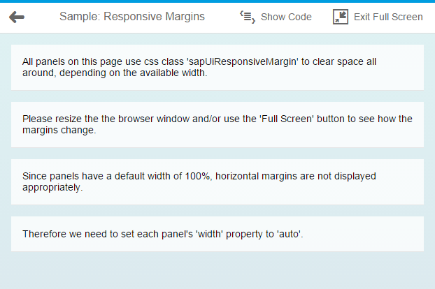

Using Predefined CSS Margin Classes
OpenUI5 gives you the option of adding spacing in between controls by adding a margin. A margin clears an area around its respective control, outside of its border.
Unlike paddings, margins are transparent, are not part of the control's clickable area, and they collapse with adjacent margins, meaning that they do not add to each other. For instance, if you have two 32px margins next to each other, the result is that only one 32px margin is displayed, not 64px of space.
All margins predefined in OpenUI5 support right-to-left (RTL) languages: when you add a margin to the left, we make sure that it is displayed on the right if your user has chosen an RTL language such as Hebrew or Arabic. For our CSS classes, we offer four standard sizes, namely tiny (0.5rem or 8px), small (1rem or 16px), medium (2rem or 32px) and large (3rem or 48px).
There are four types of margin available:
- Full margins, which completely surround your control
- Single-sided margins
- Two-sided margins
- Responsive margins, which adapt to the available screen width
If you would like to clear an area all around your control, use one of the following margin classes:
sapUiTinyMargin
sapUiSmallMargin
sapUiMediumMargin
sapUiLargeMargin
For single-sided margins, choose a size (Tiny, Small, Medium or Large, which stand for 8, 16, 32 or 48px respectively) and a direction (Begin, End, Top or Bottom, where Begin is left and End is right and vice versa in RTL mode). For example, if you need to clear a 32px space to the left of your control (or to the right in RTL mode), you would add the class sapUiMediumBegin. You can also add several classes at once, as long as they point to different directions. For example, you would add classes sapUiLargeEnd and sapUiLargeBottom to clear a 48px space to the bottom and to the right of a control (or to the left in RTL mode).
Here are the classes we provide for single-sided margins:
|
sapUiTinyMarginTop sapUiTinyMarginBottom sapUiTinyMarginBegin sapUiTinyMarginEnd |
sapUiSmallMarginTop sapUiSmallMarginBottom sapUiSmallMarginBegin sapUiSmallMarginEnd |
sapUiMediumMarginTop sapUiMediumMarginBottom sapUiMediumMarginBegin sapUiMediumMarginEnd |
sapUiLargeMarginTop sapUiLargeMarginBottom sapUiLargeMarginBegin sapUiLargeMarginEnd |
If you’d like to clear the space to the left and right or top and bottom of your control, we've provided several two-sided margin classes for you to use. Again, just choose the size and orientation that you need (BeginEnd, TopBottom). For example, if you need to clear a 32px space both to the left and right of a control, you would add the class sapUiMediumBeginEnd. Here are the classes that are available:
|
sapUiTinyMarginBeginEnd sapUiTinyMarginTopBottom |
sapUiSmallMarginBeginEnd sapUiSmallMarginTopBottom |
sapUiMediumMarginBeginEnd sapUiMediumMarginTopBottom |
sapUiLargeMarginBeginEnd sapUiLargeMarginTopBottom |
If your application is supposed to run on smartphone, tablet and desktop, it may be useful to choose your margins depending on the screen width that is available. OpenUI5 now comes with CSS class sapUiResponsiveMargin, which does just that. It works with media queries to determine the available screen width and adapts its margin as follows:
| Screen Width | Example |
|---|---|
| Screen width less than 600px (smartphones): For devices such as these, sapUiResponsiveMargin will provide a 16px (1rem) bottom margin to your control. Each of the panels shown in the screenshot is using sapUiResponsiveMargin. As a result, they are all clearing the same 16px area of space below them. |
 |
| Between 600px and 1023px (tablets and small desktops): For these, sapUiResponsiveMargin will provide a 16px (1rem) margin all around your control, as you can see in the screenshot. |
 |
| Larger than 1023px (large desktops): For these, sapUiResponsiveMargin will provide 16px (1 rem) top and bottom margin as well as a 32px (2 rem) left and right margin, as shown in the screenshot. |
 |
The following exceptions to these rules exist:
- When your sapUiResponsiveMargin control is placed within a sap.m.SplitApp master view, it will always be provided with a 16px bottom margin and nothing else. Here, the thresholds mentioned above do not affect your control.
- Within a SplitApp’s detail view, there will always be a 16px margin all around your sapUiResponsiveMargin control, regardless of the available screen width. Usually, the SplitApp is responsive as well, though. If it hides its master view because the available screen width is not sufficient, or if it is running in ‘HideMode’, your control will also ignore the fact that it is placed into a SplitApp’s detail view and it will be responsive again.
When applying classes with horizontal margins to a control, such as sapUiSmallMargin or sapUiSmallMarginBegin, for example, make sure that your control does not have a 100% width. If your control has a width property (which most controls have), set the width value to auto, for example:
<Panel width="auto" class="sapUiLargeMarginBegin
sapUiLargeMarginBottom">If your control does not have a width property but still has a default width of 100%, you can add our CSS class sapUiForceWidthAuto to your control, which ensures that the control’s default width is overwritten with the value auto. An example for such a control is sap.m.IconTabBar.
To apply the classes described here in your code, simply add a class attribute and the margin class to the respective control tag in your declarative xml views. If you need to add several classes at once (which may be the case if you are using single-sided margins), separate them by a space. Here’s a sample snippet containing a panel and an IconTabBar:
#!xml
<mvc:View
height="100%"
controllerName="sap.m.sample.StandardMarginsEnforceWidthAuto.Page"
xmlns:mvc="sap.ui.core.mvc"
xmlns="sap.m">
.
.
.
<Panel width="auto" class="sapUiLargeMarginBegin sapUiLargeMarginBottom">
<content>
</content>
</Panel>
<IconTabBar
expanded="{device>/isNoPhone}"
class="sapUiForceWidthAuto sapUiMediumMarginBeginEnd">
<items>
.
.
.
</items>
</IconTabBar>
.
.
</mvc:View>If you would like to add margins to javascript code, please use the control’s addStyleClass method. For example: myPanel.addStyleClass(‘sapUiLargeMargin’) . Again, if you need to add several classes at once, you can do so by separating them by a space. Make sure that you set the panel’s width to auto as shown here: myPanel.setWidth(‘auto’).
If a control comes with a margin that you don’t want for some particular reason, you can use one of our convenience classes to remove it. You can either use sapUiNoMargin to remove the margins all around your control, or you can choose one or more classes from those listed below to remove a margin in one or more particular direction:
- sapUiNoMarginTop
- sapUiNoMarginBottom
- sapUiNoMarginBegin
- sapUiNoMarginEnd
For a detailed example of how our predefined margin classes work, see our explored app: sap.ui.core.StandardMargins.